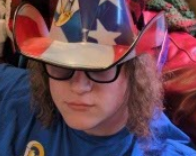

Meet the Dungeon Master

Well met, traveler! I am Asher Aschilean.
I am a lifelong gamer, storyteller, and your friendly neighborhood Dungeon Master. I've spent countless hours rolling dice, building worlds, and watching my players derail my carefully planned campaigns (and loving every second of it).
Why I Create
I believe that the magic of tabletop roleplaying games lies in the shared experience at the table. My goal is to create exciting, easy-to-run modules that take the heavy lifting off the DM's shoulders so they can focus on what really matters: having fun with their friends.
From bizarre mutant encounters to classic dungeon crawls, I try to infuse all of my writing with a sense of wonder, danger, and a little bit of old-school fantasy charm. Best of all, I provide these adventures completely for free to the community.
Connect with Me
When I'm not writing up the next chaotic encounter, you can usually find me hanging out on Reddit sharing ideas and talking about TTRPGs. Feel free to drop by and say hello!